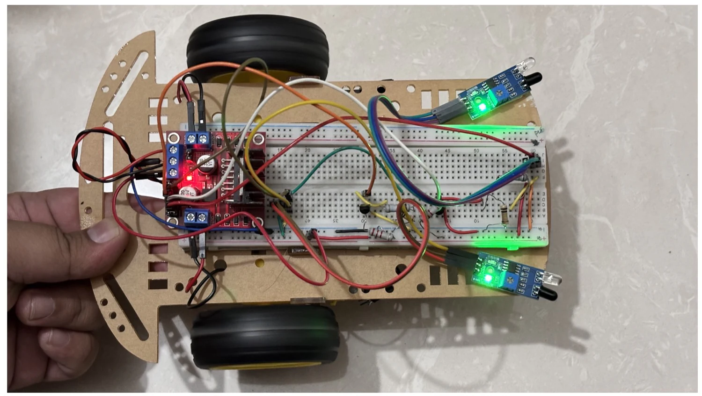
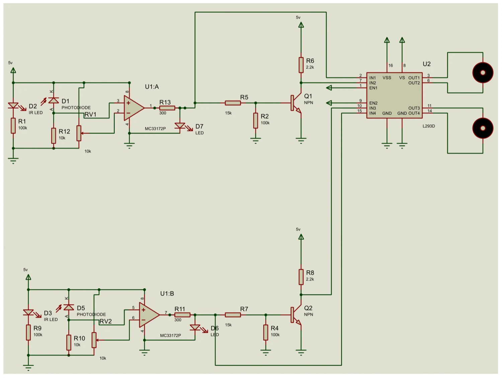

Microcontroller-Free Obstacle-Avoiding Robot
A microcontroller-free obstacle-avoiding robot built from IR sensors, op-amp comparators and discrete transistor (RTL) logic gates driving an L298N H-bridge — CSE350.

Circuit controls the robot
Scroll to watch it unfold. Each beat is one documented step of the project.
- 01
Infrared sensing
Infrared light bounces back off the obstacle.
- 02
Comparator
An op-amp comparator turns the reflection into a clean on/off signal.
- 03
RTL logic
Resistor-transistor logic gates built from NPN transistors decide the response.
- 04
Motor driver
The L298N H-bridge changes the motors so the robot steers away.
- 05
Outcome
The robot turns away with no microcontroller and no code.
- 06
Clear path
With nothing ahead, both motors keep driving forward.
An illustration of how the system works, drawn from the write-up below. It is not recorded output.
Overview
An obstacle-avoiding robot that navigates with no microcontroller and no code at all — every decision is made by discrete electronics. It's a hands-on demonstration that autonomous behaviour doesn't always need a programmable brain, built for CSE350 (digital logic / electronics).
How it works
Infrared sensors paired with op-amp comparators turn how much light bounces back off an obstacle into clean binary (on/off) signals. Those pass through Resistor-Transistor Logic (RTL) NOT gates built from NPN transistors, which generate the motor-control logic, and an L298N H-bridge then drives the two DC motors. The result: the robot steers away from obstacles purely through analog sensing and transistor logic.
Why it's interesting
By removing every programmable component, it becomes a clear teaching model for beginners in robotics and digital electronics — and a reminder of how much you can do with comparators and a handful of logic gates. Bench testing showed reliable detection and dynamic response across a range of obstacle scenarios.
By the numbers
Schematic & figures

Tech stack & key skills
Core tools, methods and skills demonstrated in this project: